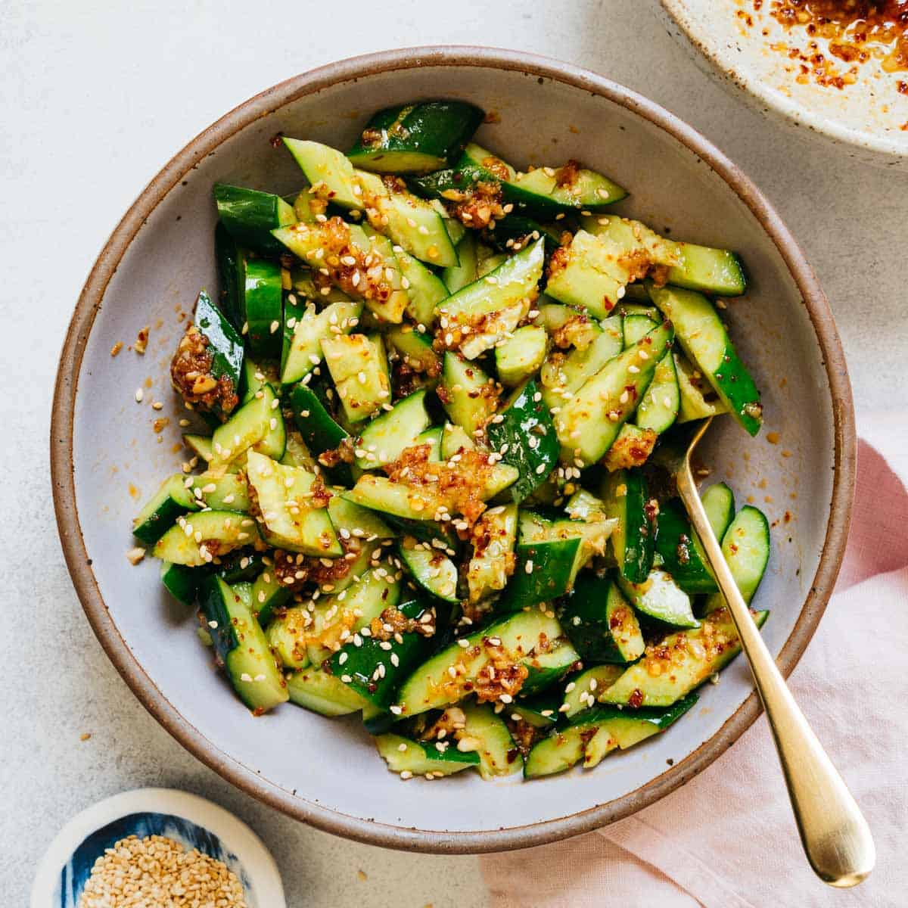

Jana's Chinese Cucumber Salad Recipe

Description
The best vegetable side dish for a plethora of Chinese and Asian classics.
Ingredients
- 6 Mini cucumbers or Persian cucumbers
- 2 teaspoon Salt to drain water
- 1 tablespoon Regular soy sauce
- 2 cloves Garlic minced
- 1 tablespoon Rice vinegar or white vinegar
- 1 tablespoon Chinese chili oil
- 1 tablespoon white granulated sugar
- 1 teaspoon Sesame oil
- 1 teaspoon Sesame seeds
- 2 tablespoon green onion finely sliced
Steps
- Wash cucumbers and cut off the ends
- Place one cucumber between two chopsticks that you don’t mind nicking up (like takeout chopsticks). Make thin diagonal slices on the top. Then flip the cucumber over and do the same on the other side. Then cut cucumber into halves. Repeat for remaining cucumbers. Transfer to a large bowl. Alternatively, you can thily slice your cucumbers too. *Refer to video below for better visuals. Note: Do not cut them in on a straight angle or the spiral will not work.
- Sprinkle salt over cucumbers and gently massage into them. Let cucumbers soak in salt for 5 minutes (no more than 10 minutes or they will break down). Rinse with cold water at least 3-4 times to completely remove the salt. Strain and set aside.
- Combine dressing ingredients in a separate bowl.
- Pour dressing over cucumbers and gently mix. Enjoy!
Now you're done! :D
Other Recipes..